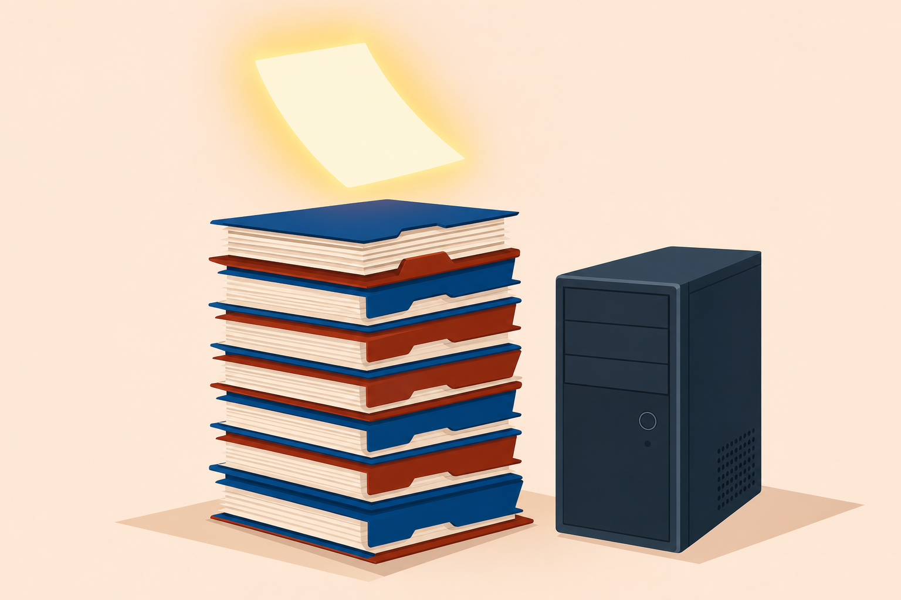

01
Document
the change and the asset, so the whole team sees what happened and why.
Change management, safety and environmental procedures, and the scripts that handle the repetitive work: the binder that runs the shop.
Start here: A workstation on your bench gets replaced today. What could go wrong between now and five o’clock?
the change and the asset, so the whole team sees what happened and why.
with the electrical, environmental, and static hazards on every bench.
the repetitive follow-up, using the constructs every scripting language shares.
One workstation rides the whole class. Today it comes off the bench for good, and every step lands in the binder.
No unplugging yet. Paperwork first.
Five fields reduce the risk of outages caused by changes.
Five fields, on paper.
#22-047The board reviews the request thoroughly.
ApprovedMake the change.
↺ Rollback and backup plan readyThe end user signs off. Now it’s done.
With a partner: What in the approved change saves this afternoon, and who decides when the change counts as done?

People first, on every job.
The building sets structural rules.
System protection, by regulation.
Waste disposal: chemicals, lithium batteries.
Before #22-047 opens up, these four decide what a legal teardown looks like.
Electrical fire: CO2 or powder extinguishers. Never water.
Test before every touch. Company policy may ban live work outright.
On your wrist.
Under the work.
Bonded, not floating.
Trust the strap only with a working current-limiting resistor. Test it daily.
Not meant for long-term secondary power.
With a partner: Name the safe response to the fire, the lift, and the loose component. Be specific.
Material safety data sheet
Hazards, cleanup, and safety requirements for each material.
Disposal/destruction is the last stop on the asset lifecycle. The record closes when the material does.
A series of commands executed in order, written for one OS, usually inside an IDE.
Bash (Bourne Again Shell) or Ksh (Korn Shell).
Windows automation.
Windows scripting.
Windows, one command per line.
Web content and apps.
General purpose: automation and software apps. Python IDLE.
python # runs version 2, end of life since 2020 python3 # runs version 3, the one to write for
==-eqEqual: TRUE when both match!=-neNot equal<-ltLess than>-gtGreater than<=-leLess than or equal>=-geGreater than or equal&&ANDBoth must be TRUE||OREither TRUE is enoughWith a partner: Name each language, then the one construct the interpreter never reads.
The stamp ends the machine. The record, the placards, and the script keep the shop running the same way tomorrow.
One binder, three lessons, zero improvising.
A change request should include five things. Name them.
An electrical fire: which extinguishers work, and what never touches it?
Match .ps1, .py, and .sh to their languages.
Next step: Run the labs: Install a UPS, JavaScript, Implement a PowerShell Script, and Implement a Bash Script. This closes the Core 2 modules. The practice exams come next.